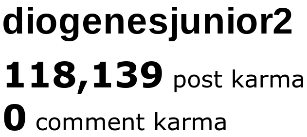

Karma Bot
Karma Bot

Gosh, where do I even start? This was a fun experiment. If you're here, you're probably pissed off and want to know more about these reddit bots and how they work, or you're here to set one up yourself. Either way, you're in the right place. Karma Bot was simply a personal test. I only ran the code once, and I'd say it went okay. Just okay, not smooth. I'd like to make it clear that I have never and will never use a fake account to "shill" or influence political ideas. This was simply a test to see how much karma I could get via automation (with Python). I ended up with just below 120,000 karma in a little under 72 hours.
It uses PRAW, the Python Reddit API Wrapper, and the original code was only 42 lines. I also made use of "Halo", a package that allows users to display an animated spinner while running Python code. Before I get to actually explaining my code, I'd like to explain what it does:
- Go to /r/random
- Grab random post from /top
- If the submission is hosted on i.redd.it or i.imgur.com:
- Upload to Imgur with the submission's url
- Submit to subreddit with link to Imgur repost
Now, to break down the code:
import time
import praw
import random
import config
import pyimgur
from halo import Halo
These are the packages that I used.
- - "time" - for waiting and sleeping
- - "praw" - use reddit's API
- - "random" - grabbing random posts
- - "config" - PY file that contains API keys
- - "pyimgur" - use imgur's API
- - "halo" - fancy spinner
spinner = Halo(spinner={'interval': 100, 'frames': ['-', '+', '*', '+', '-']})
Configuration for the spinner.
reddit = praw.Reddit(...)
imgur_id = config.I_ID
Allows us to use both Imgur and Reddit's API
spinner.start()
subreddit = reddit.subreddit('random')
domains = ['i.redd.it', 'i.imgur.com']
limit = None
print('Random Subreddit Is: ', subreddit)
In order:
- Start the spinner
- Define subreddit as /r/random
- List of domains to check
- Amount of posts to check
- Print subreddit
submissions = list(subreddit.top('all', limit=limit))
submission = random.choice(submissions)
- Get list of posts in subreddit
- Choose random post from above list
if submission.domain in domains:
im = pyimgur.Imgur(imgur_id)
uploaded_image = im.upload_image(url=submission.url)
- If the domain is in our list of domains:
- Declare PyImgur instance
- Upload image to Imgur with the submission's url
with open ('links.txt', "a") as f:
f.write(uploaded_image.link + "\n")
- Open "links.txt", a file made for storing Imgur urls
- Write Imgur url to file
reddit.validate_on_submit = True
subreddit.submit(submission.title, url=uploaded_image.link)
spinner.succeed('success')
- No idea why I need to validate when I submit, but the API recommended it (at the time)
- Submit Imgur url to subreddit with old submission's title
- Print "success" with spinner
except Exception as e:
exc = str(str(e))
spinner.fail(text=exc)
time.sleep(60)
- If any exceptions or errors happen:
- Print the exception with spinner
- Sleep for 60 seconds
except KeyboardInterrupt:
spinner.warn(text='shutting down :(')
quit()
- If user ends program:
- Note so with spinner
- Quit
If you know me, you'd know that I hate dealing with "prettified" code. It bugs me a ton. I later learned that I could simplify the code, and you can see that in the newer code version. I later left an end note in /r/TheoryOfReddit, but the moderators removed it:
It was fun [for me] while it lasted. Goodbye all.
If I, a mere bored teenager could do this in under three days, what could a big corporation do? Someone else could run this a ton, sell the accounts, and profit, which would be just monetizing karma. Anybody could do this themselves on 20 to 30 accounts and have their own mini bot net. This account isn't even aged! I would have way more karma if I waited, because /u/AutoModerator removed a ton of my posts.
Karma Bot
|